Subsections
B. Time-harmonic Maxwell's equations with low-frequency approximation
We show, how the model problem can be derived from the time-harmonic Maxwell's equations in the low-frequency case.
We follow the outline of [1]:
We consider the following primal formulation of Maxwell's equations:
where
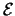 and
 are the electric and magnetic field.
are the electric and magnetic field.
 are the dielectric and magnetic permeability coefficients, and
are the dielectric and magnetic permeability coefficients, and  denotes the electric conductivity.
and are assumed to be symmetric matrices in
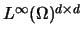, and
denotes the electric conductivity.
and are assumed to be symmetric matrices in
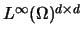, and
 and 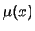 are
positive definite. is positive definite in a conductor and vanishes in an insulator.
and 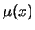 are
positive definite. is positive definite in a conductor and vanishes in an insulator.
We assume that
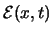 and
 are time-harmonic, i. e. they can be represented as
are time-harmonic, i. e. they can be represented as
Here,
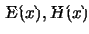 are complex-valued vector fields and
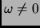 is a given angular frequency.
REMARK 8
For example, a monofrequent laser can be described by the time-harmonic Maxwell's equations.
In the time-harmonic case the space and time variables decouple and we can eliminate the time dependency. For this, we ask
 and
and
 to satiesfy (35).
By then inserting the second equation of (35) into the first one, we can eliminate the magnetic field 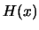. This yields
to satiesfy (35).
By then inserting the second equation of (35) into the first one, we can eliminate the magnetic field 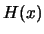. This yields
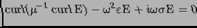
In the low-frequency case where 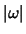 is small, it is known that for general materials the material parameters are such that
Hence, neglecting the expression
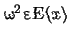 is reasonable and it brings us to the low-frequency approximation of the
time-harmonic Maxwell's equations:
We consider this equation in a conductor  ( pos. def.) and a impose Dirichlet boundary condition on the tangential trace
of the field:
( pos. def.) and a impose Dirichlet boundary condition on the tangential trace
of the field:
Proceeding as in [1], we assume that a vector funciton 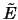 is known,
satiesfying (36), and we end up with the following boundary value problem for

 |
(37) |
Although problem (37) is complex-valued, finding a finite element method to approximate (37)
basically boils down to finding a finite element method for the real valued model problem (1).
2003-04-30